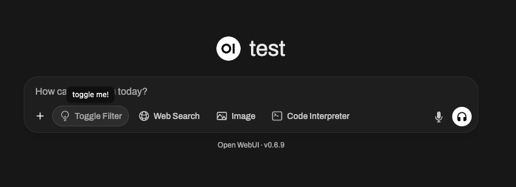

🪄 Função do filtro: modifique entradas e saídas
Bem -vindo ao guia abrangente sobre funções de filtro no Nullcore! Os filtros são flexíveis e poderososSistema de plug -inpara modificar dadosAntes de ser enviado para o grande modelo de idioma (LLM)(entrada) ouDepois de voltar do LLM(saída). Esteja você está transformando entradas para melhor contexto ou limpar saídas para melhorar a legibilidade,Funções de filtroDeixe você fazer tudo.
Este guia vai quebrarO que são os filtros, como eles funcionam, sua estrutura e tudo o que você precisa saber para criar filtros poderosos e amigáveis. Vamos cavar e não se preocupe - eu usarei metáforas, exemplos e dicas para deixar tudo cristalino claro! 🌟
🌊 O que são filtros em webui aberto?
Imagine o Nullcore como umfluxo de águafluindo através de tubos:
- Entradas do usuárioeSaídas LLMsão a água.
- Filtrossão osestágios de tratamento de águaIsso limpa, modifica e adapta a água antes de chegar ao destino final.
Os filtros ficam no meio do fluxo - como pontos de verificação - onde você decide o que precisa ser ajustado.
Aqui está um resumo rápido do que os filtros fazem:
- Modificar entradas do usuário (função de entrada): Ajuste os dados de entrada antes de atingir o modelo de IA. É aqui que você aprimora a clareza, adiciona contexto, higieniza mensagens de texto ou reformate para atender aos requisitos específicos.
- Saídas do modelo de interceptação (função do fluxo): Capture e ajuste as respostas da IAcomo eles são geradospelo modelo. Isso é útil para modificações em tempo real, como filtrar informações confidenciais ou formatar a saída para uma melhor legibilidade.
- Modificar saídas do modelo (função de saída): Ajuste a resposta da IADepois de processado, antes de exibi -lo ao usuário. Isso pode ajudar a refinar, registrar ou adaptar os dados para uma experiência mais limpa do usuário.
Conceito -chave:Os filtros não são modelos independentes, mas ferramentas que aprimoram ou transformam os dados que viajamparaedemodelos.
Filtros são comotradutores ou editoresNo fluxo de trabalho da IA: você pode interceptar e alterar a conversa sem interromper o fluxo.
🗺️ Estrutura de uma função de filtro: o esqueleto
Vamos começar com a representação mais simples de uma função de filtro. Não se preocupe se algumas partes se sentirem técnicas no começo - vamos quebrar tudo passo a passo!
🦴 Esqueleto básico de um filtro
dePydanticimportarBasemodel
dedigitandoimportarOpcional
aula Filtro
# Válvulas: opções de configuração para o filtro
aula VálvulasBasemodel
passar
def __init__auto
# Inicialize válvulas (configuração opcional para o filtro)
autoválvulasautoVálvulas
def entradaauto, Assim,corpo dito dito
# É aqui que você manipula as entradas do usuário.
imprimirf "Inlet chamado:{corpo
retornarcorpo
def fluxoauto, Assim,evento dito dito
# É aqui que você modifica pedaços transmitidos de saída do modelo.
imprimirF "Evento de fluxo:{evento
retornarevento
def tomadaauto, Assim,corpo dito Nenhum
# É aqui que você manipula saídas do modelo.
imprimirf "Outlet chamado:{corpo
🆕 🧲 TOGLGL Filtro Exemplo: Adicionando interatividade e ícones (novo no webui aberto 0.6.10)
Os filtros podem fazer mais do que simplesmente modificar o texto - eles podem expor alternância da interface do usuário e exibir ícones personalizados. Por exemplo, você pode querer um filtro que possa ser ativado/desativado com um botão de interface do usuário e exibe um ícone especial na interface do usuário de entrada de mensagem do Nullcore.
Veja como você pode criar um filtro de alternância:
dePydanticimportarBasemodel, Assim,Campo
dedigitandoimportarOpcional
aula Filtro
aula VálvulasBasemodel
passar
def __init__auto
autoválvulasautoVálvulas
autoalternar Verdadeiro # IMPORTANTE: Isso cria uma interface do usuário do Switch em Web Open
# Dica: use Data SVG URI!
autoícone "" "Dados: imagem/svg+xml; base64, phn2zyb4bwxucz0iahr0cdovl3d3dy53my5vcmcvmjawmc9zd mciigzpbgw9Im5VBMuiiHzpzxDCB3G9IJAGMCAYNCAYNCIGC3RYB2TLLXDPZHROPSIXLJUIIHN0CM9R ZT0iy3vycmvudenvbg9yiibjbgfzcz0ic2l6zs02ij4kica8cgf0acbzdhjva2utbglUzwnhcd0icm 91BMQIIHN0CM9RZS1SAW5LAM9PBJ0ICM91BMQIIGQ9IK0XMIAXOHYTNS4YNW0WIDBHNI4WMSA2LJAXI DAgMCAwIDEuNS0uMTg5bS0xLjUuMTg5YTYuMDEgNi4wMSAwIDAgMS0xLjUtLjE4OW0zLjc1IDcuNDc4YTEyLjA2IDEyLjA2IDAgMCAxLTQuNSAwbTMuNzUgMi4zODNhMTQuNDA2IDE0LjQwNiAwIDAgMS0zID BnmtqumJUGMTH2lS4XOTJJMC0UOTGZLJY1OC0XlJGYMYAXLJUWOC0YLJMXNME3LJUGNY41IdAgmsAw Ltcunte3idbjljg1ljq5myaxljuwosaxljmzmyaxljuwosayljmxnlyxociglz4kpc9zdmc+cg == "" "
passar
assíncrono def entrada
auto, Assim,corpo dito, Assim,__event_emitter__, Assim,__usuário__Opcional[[dito Nenhum
dito
aguarde__event_emitter__
{
"tipo" "status", Assim,
"dados" {
"descrição" "Alterado!", Assim,
"feito" Verdadeiro, Assim,
"escondido" Falso, Assim,
, Assim,
retornarcorpo
🖼️ o que está acontecendo?
- alternar = trueCria uma interface do usuário do Switch no Webui aberto - os usuários podem ativar ou desativar manualmente o filtro em tempo real.
- ícone(com um URI de dados) será exibido como uma pequena imagem ao lado do nome do filtro. Você pode usar qualquer SVG desde que o URI de dados codificado!
- O
inletfunçãousa o__event_emitter__Argumento especial para transmitir feedback/status para a interface do usuário, como um pouco de brinde/notificação que diz "Toned!"

Você pode usar esses mecanismos para tornar seus filtros dinâmicos, interativos e visualmente exclusivos no ecossistema de plug -in do Nullcore.
🎯 Componentes -chave explicados
1️⃣ValvesClasse (configurações opcionais)
Pense emVálvulascomo botões e controles deslizantes para o seu filtro. Se você deseja oferecer aos usuários opções configuráveis para ajustar o comportamento do seu filtro, você os define aqui.
aula VálvulasBasemodel
Option_name str "Valor padrão"
Por exemplo:
Se você está criando um filtro que converte respostas em maiúsculas, pode permitir que os usuários configurem se cada saída é totalmente capitalizada por meio de uma válvula comoTRANSFORM_UPPERCASE: bool = True/False
Configurando válvulas com menus suspensos (enums)
Você pode aprimorar a experiência do usuário para as configurações do seu filtro, fornecendo menus suspensos em vez de entradas de texto de forma livre para certasValves. Isso é alcançado usandojson_schema_extracom oenumpalavra -chave em seu pydanticFielddefinições.
OenumA palavra -chave permite especificar uma lista de valores predefinidos que a interface do usuário deve apresentar como opções em um suspensão.
Exemplo:Criando um suspensão para temas coloridos em um filtro.
dePydanticimportarBasemodel, Assim,Campo
dedigitandoimportarOpcional
# Defina suas opções disponíveis (por exemplo, temas coloridos)
Color_themes {
"Simples (sem cor)" [[, Assim,
"Azul monocromático" [["azul", Assim, "RoyalBlue", Assim, "Steelblue", Assim, "Lightsteelblue", Assim,
"Caloroso e enérgico" [["laranja", Assim, "vermelho", Assim, "magenta", Assim, "Darkorange", Assim,
"Cool e calma" [["ciano", Assim, "azul", Assim, "verde", Assim, "Cerceta", Assim, "CadetBlue", Assim,
"Floresta e Terra" [["verde", Assim, "Darkgreen", Assim, "Limegreen", Assim, "Olivegreen", Assim,
"Púrpura mística" [["roxo", Assim, "Darkorchid", Assim, "Mediumpurple", Assim, "Lavanda", Assim,
"Escala de cinza" [["cinza", Assim, "Darkgray", Assim, "LightGray", Assim,
"Diversão de arco -íris" [[
"vermelho", Assim,
"laranja", Assim,
"amarelo", Assim,
"verde", Assim,
"azul", Assim,
"índigo", Assim,
"violeta", Assim,
, Assim,
"Breeze Ocean" [["azul", Assim, "ciano", Assim, "Lightcyan", Assim, "DarkTurquoise", Assim,
"Sunset Glow" [["Darkred", Assim, "Darkorange", Assim, "Laranja", Assim, "ouro", Assim,
"Sequência personalizada (consulte o código)" [[, Assim,
aula Filtro
aula VálvulasBasemodel
selected_theme str Campo
"Azul monocromático", Assim,
descrição"Escolha um tema de cor predefinido para respostas de LLM., Assim,
JSON_SCHEMA_EXTRA{"Enum" listaColor_themeschaves, Assim, # Chave: isso cria o menu suspenso
Custom_Colors_CSV str Campo
, Assim,
descrição"CSV de cores para o tema 'sequência personalizada' (por exemplo, 'vermelho, azul, verde'). Usa nomes Xcolor.", Assim,
strip_existing_latex bool Campo
Verdadeiro, Assim,
descrição"Se for verdade, tentam remover os comandos de cores do LaTex existentes. Recomendado para evitar problemas de renderização aninhados"., Assim,
colorize_type str Campo
"sequencial_word", Assim,
descrição"Como aplicar as cores: 'sequencial_word' (palavra por palavra), 'sequencial_line' (linha por linha), 'per_letter' (letra por letra), 'Full_Message' (mensagem inteira).", Assim,
JSON_SCHEMA_EXTRA{
"Enum" [[
"sequencial_word", Assim,
"sequencial_line", Assim,
"Per_letter", Assim,
"Full_Message", Assim,
, Assim, # Outro exemplo de suspensão de enum
color_cycle_reset_per_message bool Campo
Verdadeiro, Assim,
descrição"Se for verdade, a sequência de cores reinicia para cada nova mensagem de resposta LLM. Se false, continua entre as mensagens"., Assim,
Debug_logging bool Campo
Falso, Assim,
descrição"Habilite o registro detalhado do console para depurar operações de filtro"., Assim,
def __init__auto
autoválvulasautoVálvulas
# ... Resto da sua lógica __init__ ...
O que está acontecendo?
json_schema_extra: Este argumento emFieldPermite injetar propriedades arbitrárias de esquema JSON que o Pydantic não suporta explicitamente, mas pode ser usado por ferramentas a jusante (como o renderizador da UI da Nullcore)."enum": list(COLOR_THEMES.keys()): Isso diz ao Nullcore que oselected_themeo campo deve apresentar uma seleção de valores, especificamente as chaves de nossoCOLOR_THEMESdicionário. A interface do usuário renderizará um menu suspenso com "Plain (sem cor)", "azul monocromático", "quente e energético", etc., como opções selecionáveis.- O
colorize_typeCampo também demonstra outroenumsuspenso para diferentes métodos de coloração.
Usandoenumpara o seuValvesAs opções tornam seus filtros mais fáceis de usar e evita entradas inválidas, levando a uma experiência de configuração mais suave.
2️⃣inletFunção (entrada de pré-processamento)
Oinletfunção é comoPreparando comida antes de cozinhar. Imagine que você é um chef: antes que os ingredientes entrem na receita (o LLM neste caso), você pode lavar vegetais, cortar a cebola ou temperar a carne. Sem essa etapa, seu prato final pode não ter sabor, ter produtos não lavados ou simplesmente ser inconsistente.
No mundo do webui aberto, oinletfunção faz essa importante preparação funciona noentrada do usuárioAntes de ser enviado ao modelo. Ele garante que a entrada seja a mais limpa, contextual e útil possível para a IA manipular.
Entrada
body: A entrada bruta do Nullcore para o modelo. Está no formato de uma solicitação de conclusão de bate-papo (geralmente um dicionário que inclui campos como as mensagens da conversa, as configurações de modelo e outros metadados). Pense nisso como seus ingredientes de receita.
Sua tarefa
Modificar e devolver obody. A versão modificada dobodyé com o que o LLM funciona, então esta é sua chance de trazer clareza, estrutura e contexto para a entrada.
🍳 Por que você usaria oinlet
-
Adicionando contexto: Anexar informações cruciais automaticamente à entrada do usuário, especialmente se o texto deles for vago ou incompleto. Por exemplo, você pode adicionar "Você é um assistente amigável" ou "Ajude esse usuário a solucionar um bug de software".
-
Formatação de dados: Se a entrada exigir um formato específico, como JSON ou Markdown, você poderá transformá -lo antes de enviá -lo para o modelo.
-
Entrada higienizada: Remova caracteres indesejados, tire símbolos potencialmente prejudiciais ou confusos (como espaço em branco ou emojis excessivos) ou substitua informações confidenciais.
-
Simplificar a entrada do usuário: Se a saída do seu modelo melhorar com orientações adicionais, você poderá usar o
inletInjetar instruções de esclarecimento automaticamente!
💡 Exemplo de casos de uso: construir na preparação de alimentos
🥗 Exemplo 1: Adicionando contexto do sistema
Digamos que o LLM seja um chef preparando um prato para a culinária italiana, mas o usuário não mencionou "isso é para a culinária italiana". Você pode garantir que a mensagem seja clara, anexando esse contexto antes de enviar os dados para o modelo.
def entradaauto, Assim,corpo dito, Assim,__usuário__Opcional[[dito Nenhum dito
# Adicionar mensagem do sistema para o contexto italiano na conversa
context_message {
"papel" "sistema", Assim,
"contente" "Você está ajudando o usuário a preparar uma refeição italiana".
# Insira o contexto no início da história do bate -papo
corposetDefault"Mensagens", Assim, [[inserir0, Assim,context_message
retornarcorpo
O que acontece?
- Alguma entrada do usuário como "Quais são algumas boas idéias de jantar?" Agora carrega o tema italiano porque definimos o contexto do sistema! O cheesecake pode não aparecer como uma resposta, mas o macarrão com certeza o fará.
🔪 Exemplo 2: Limpeza de entrada (Remova caracteres ímpares)
Suponha que a entrada do usuário pareça confusa ou inclua símbolos indesejados como!!!, tornando a conversa ineficiente ou mais difícil para o modelo analisar. Você pode limpá -lo ao preservar o conteúdo principal.
def entradaauto, Assim,corpo dito, Assim,__usuário__Opcional[[dito Nenhum dito
# Limpe a última entrada do usuário (do final da lista de 'mensagens')
last_messagecorpo[["Mensagens"[[1[["contente"
corpo[["Mensagens"[[1[["contente" last_messagesubstituir, Assim, tira
retornarcorpo
O que acontece?
- Antes:
"How can I debug this issue!!!"➡️ Enviado ao modelo como"How can I debug this issue"
NOTA: O usuário sente o mesmo, mas o modelo processa uma consulta mais limpa e mais fácil de entender.
📊 ComoinletAjuda a otimizar a entrada para o LLM:
- MelhoraprecisãoEsclarecendo consultas ambíguas.
- Faz a IAmais eficienteRemovendo ruído desnecessário como emojis, tags html ou pontuação extra.
- Garanteconsistênciaformatando a entrada do usuário para corresponder aos padrões ou esquemas esperados do modelo (como, digamos, JSON para um caso de uso específico).
Pense eminletComo o sous-chef em sua cozinha—Enscando tudo o que entra no modelo (sua AI "receita") foi preparado, limpo e temperado com perfeição. Quanto melhor a entrada, melhor a saída!
🆕 3️⃣streamHook (novo em webui aberto 0.5.17)
🔄 Qual é ostreamGancho?
Ostreamfunçãoé um novo recurso introduzido em webui aberto0.5.17que permite que vocêInterceptar e modificar respostas do modelo transmitidoem tempo real.
Diferenteoutlet, que processa uma resposta completa,streamopera empedaços individuaiscomo eles são recebidos do modelo.
🛠️ Quando usar o gancho de fluxo?
- Modificarrespostas de streamingAntes de serem exibidos aos usuários.
- ImplementarCensura ou limpeza em tempo real
- Monitorar dados transmitidospara registro/depuração.
📜 Exemplo: Logging Streaming Phunks
Veja como você pode inspecionar e modificar respostas LLM transmitidas:
def fluxoauto, Assim,evento dito dito
imprimirevento # Imprima cada pedaço de entrada para inspeção
retornarevento
Exemplo de eventos transmitidos:
{"id": "chatcmpl-B4l99MMaP3QLGU5uV7BaBM0eDS0jb","choices": [{"delta": {"content": "Hi"}}]}
{"id": "chatcmpl-B4l99MMaP3QLGU5uV7BaBM0eDS0jb","choices": [{"delta": {"content": "!"}}]}
{"id": "chatcmpl-B4l99MMaP3QLGU5uV7BaBM0eDS0jb","choices": [{"delta": {"content": " 😊"}}]}
O que acontece?
- Cada linha representa umpequeno fragmentoda resposta transmitida do modelo.
- O
delta.contentcampocontém o texto progressivamente gerado.
🔄 Exemplo: filtrando emojis a partir de dados transmitidos
def fluxoauto, Assim,evento dito dito
paraescolhaemeventopegar"escolhas", Assim, [[
deltaescolhapegar"delta", Assim, {
se "contente" emdelta
delta[["contente" delta[["contente"substituir, Assim, # Tira emojis
retornarevento
Antes: "Hi 😊"
Depois: "Hi"
4️⃣outletFunção (saída de pós-processamento de saída)
Ooutletfunção é como umrevisor: arrume a resposta da IA (ou faça alterações finais)Depois de ser processado pelo LLM.
Entrada
body: Isso contémtodas as mensagens atuaisno bate -papo (histórico do usuário + LLM responde).
Sua tarefa: Modifique issobody. Você pode limpar, anexar ou fazer alterações de log, mas esteja atento à forma como cada ajuste afeta a experiência do usuário.
Práticas recomendadas
- Prefira o registro de edições diretas na saída (por exemplo, para depuração ou análise).
- Se forem necessárias modificações pesadas (como saídas de formatação), considere usar ofunção do tuboem vez de.
Exemplo de uso de uso: Retire as respostas sensíveis da API que você não deseja que o usuário veja:
def tomadaauto, Assim,corpo dito, Assim,__usuário__Opcional[[dito Nenhum dito
paramensagememcorpo[["Mensagens"
mensagem[["contente" mensagem[["contente"substituir"<pi_key>", Assim, "[REDACTED]"
retornarcorpo
🌟 Filtros em ação: Construindo exemplos práticos
Vamos criar alguns exemplos do mundo real para ver como você usaria os filtros!
📚 Exemplo #1: Adicione o contexto a cada entrada do usuário
Quer que o LLM sempre saiba que está ajudando um cliente a solucionar problemas de software? Você pode adicionar instruções como"Você é um assistente de solução de problemas de software"para cada consulta de usuário.
aula Filtro
def entradaauto, Assim,corpo dito, Assim,__usuário__Opcional[[dito Nenhum dito
context_message {
"papel" "sistema", Assim,
"contente" "Você é um assistente de solução de problemas de software".
corposetDefault"Mensagens", Assim, [[inserir0, Assim,context_message
retornarcorpo
📚 Exemplo #2: Saídas de destaque para fácil leitura
Retornando a saída no Markdown ou outro estilo formatado? Use ooutletfunção!
aula Filtro
def tomadaauto, Assim,corpo dito, Assim,__usuário__Opcional[[dito Nenhum dito
# Adicionar marcação de "destaque" para cada resposta
paramensagememcorpo[["Mensagens"
semensagem[["papel" "assistente" # Resposta do modelo de destino
mensagem[["contente" f "**{mensagem[['contente'** " # Destaque com Markdown
retornarcorpo
🚧 Confusão potencial: Clear FAQ 🛑
P: Como os filtros são diferentes das funções do tubo?
Filtros modificam dadosvouevindo de modelosmas não interage significativamente com a lógica fora dessas fases. Tubos, por outro lado:
- Pode integrarAPIs externasou transformar significativamente como o back -end lida com operações.
- Exponha a lógica personalizada como totalmente novos "modelos".
P: Posso fazer um pós-processamento pesado dentrooutlet
Você pode, masNão é a melhor prática.
- Filtrossão projetados para fazer alterações leves ou aplicar log.
- Se forem necessárias modificações pesadas, considere umFunção do tuboem vez de.
🎉 Resumo: Por que criar funções de filtro?
Até agora, você aprendeu:
- Entradamanipulaentradas do usuário(pré-processamento).
- Fluxointercepta e modificaSaídas do modelo transmitido(em tempo real).
- TomadaTweaksSaídas de IA(pós-processamento).
- Os filtros são melhores para alterações leves e em tempo real no fluxo de dados.
- ComVálvulas, você capacita os usuários a configurar os filtros dinamicamente para comportamento personalizado.
Sua vez: Comece a experimentar! Que pequeno ajuste ou adição de contexto poderia elevar sua experiência aberta na webui? Os filtros são divertidos de construir, flexíveis de usar e podem levar seus modelos para o próximo nível!
Codificação feliz! ✨